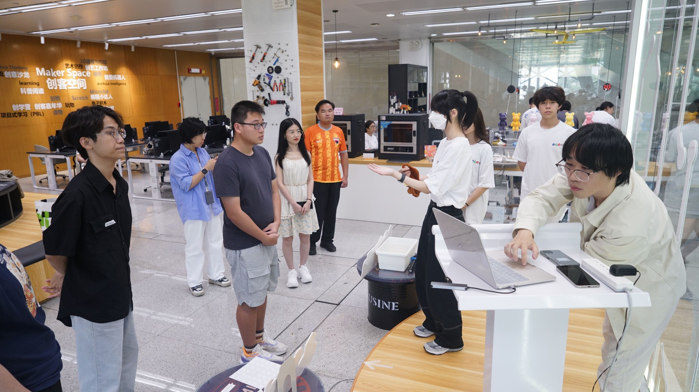

Fab City Challenge demo
2024
Toward Spatial Intelligence: Integrating wearable spatial computing with closed-loop multimodal AI to mediate human cognition and perception, enabling adaptive and reciprocal interaction in space.
Last generation computers are designed for abstract I/O, so that the interactivity and
functionality of their interfaces are constrained by such hardware-softwares systems. With the emerging of
new generation hardware and AI technologies, computer interfaces are expect to become more capable of
intelligently and augmently conducting the I/O system, in supporting a richer user activity beyond leveraging
computers as only tools.
Human beings are inherently and intrinsically situated within a spatial world.
Towards our goal of more human centered computing, we believe that interaction must be grounded in the physical
world and leverage our innate abilities for spatial cognition — SHAPE Lab. Future interface should
embeded within physical spaces where people act and collaborate, letting interaction and computation in-situ.
1. Primarily commercial head-worn visual interfaces: HMD, smart glasses. Portable ubiquitous devices or other
customized electro-mechanical hardware systems.
2. Engineering modeling approaches: optimization, decision making processes, etc.
3. Multimodal language models (conversational, vision-language), computer vision (pattern recognition, scene
reconstruction, pose tracking), generative models (2D, 3D diffusion), neural rendering (NeRF, 3DGS), etc, or
self-trained models.
4. Cognition: memory, attention, reasoning etc. Perception: stereo vision, depth perception, spatial senses, etc.
5. Direct interactive capability in space in-situ, and indirect mediate interaction through sensorimotor control,
mental modeling, sensory illusions, etc.